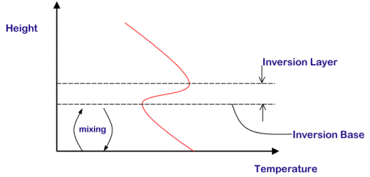
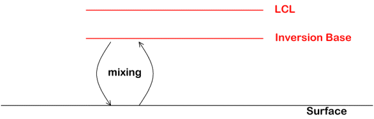
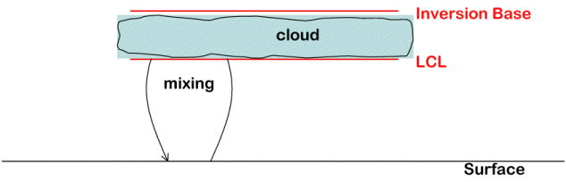
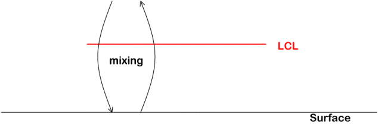
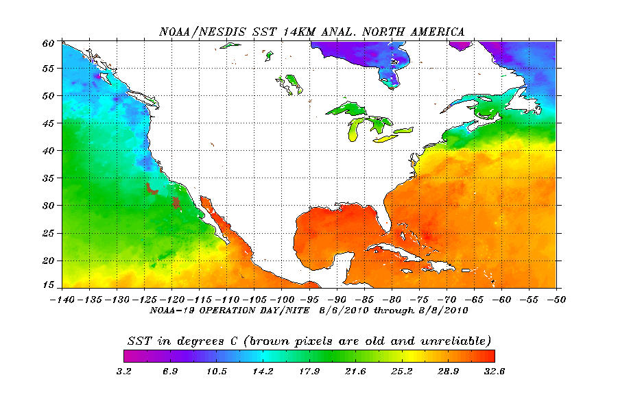

The altitude (or height) that surface air must rise for condensation to start is called the Lifting Condensation Level or LCL for short. So if air near the surface is allowed to mix upwards to the LCL a cloud will form. Under certain conditions air does not mix high enough for clouds to form, that is the top of the mixed layer is beneath the LCL. While no clouds formed, the mixing has increased the relative humidity near the top of the mixed layer and subsequent cooling of this air could increase the relative humidity to 100% and initiate cloud formation.
The height of the LCL depends on several variables including the water temperature and the temperature and moisture content of the air above the water.
- Mixing of surface air ==> leads to rising air that cools
- the Pacific High ==> leads to sinking air that warms
Often, the net result of these two processes is an Inversion Layer.

The strength of the inversion is often measured by the temperature difference between the top and base of the inversion layer, with a larger temperature difference indicating a stronger inversion. Stronger (weaker) than normal high pressure is usually associated with a stronger (weaker) than normal inversion layer. Stronger than normal inversion layers will often result in more marine layer cloud formation and longer times for the clouds to dissipate. The strength of the inversion can also be modulated by climate features such as El Nino and the Pacific Decadal Oscillation (PDO).
The development of the inversion layer is enhanced by the relatively cool ocean water off of California which helps increase the contrast between the cold air below the inversion layer and the warm air above the inversion layer. The California current system flows from Alaska southward to California bringing relatively cool water from the polar regions. Upwelling of cold deeper water along the coast of California also helps to keep the surface waters cool. Colder than normal ocean water often lead to stronger than normal inversions that can increase the amount and duration of marine layer clouds.
Another type of inversion often seen in California is called a radiation inversion. Radiation inversions form when the ground cools during the night resulting in an inversion that is based at the surface, that is the temperature increases as one moves up from the surface. Radiation inversions are usually strongest in the early morning hours during the winter months. Unlike subisidence inversions which can persist for long periods of time, a radiation inversion usually dissipates a few hours after sunrise.
Although radiation inversions generally do not play a major role in the formation or dissipation of marine layer clouds, they (along with subsidence inversions) have an impact on pollution levels by inhibiting vertical mixing of air near the surface.
The relative location of the LCL and the inversion base determine if marine stratus clouds will form.
Case A: LCL Above Inversion Base
In this case the inversion base prevents mixing from reaching the LCL. The relative humidity does not reach 100% and
no clouds will form. This situtation occurs when there is a very strong high pressure over the region and/or
very weak mixing (low winds).

Case B: LCL Below Inversion Base
Here, mixing is allowed to extend above and beyond the LCL up until the Inversion Base is encountered. In this case
a cloud forms between the LCL and Inversion Base. This situtation is typical when there
is a moderate to strong high pressure over the region and moderate to strong mixing. This is
how marine layer clouds are formed. The base of the inversion
layer limits the vertical growth of clouds and is why the top of marine layer clouds are usually very uniform in
height. Airplanes flying out of Lindbergh Field during summer mornings often will travel
through the marine layer a short time after takeoff. Once the airplane emerges through the top of the clouds,
passengers experience bright sunshine and can see the very sharply delineated top of the marine layer.

Case C: No Inversion Layer (or Inversion Layer at very high altitude)
Without an inversion layer present (or if the inversion layer is present but at a very high height far above the LCL), mixing will
extend far above the LCL. As the surface air moves higher it can mix with much drier air from above. If too much dry air
is mixed in, the relative humidity will fall below 100% and and any clouds that formed will evaporate.

It is the relative location of both the LCL and the base of the Inversion Layer that determine if marine layer clouds will form. The most likely time of the year for marine layer clouds to form is April to August. The local winds are most likely to bring the marine stratus over the coastal land regions during May-June. However, winds can (and do) bring marine layer clouds over land during other times of the year as well.
Another factor helping inversion layers form is relatively cold water temperatures. The cold water cools the air beneath the inversion layer that helps provide the strong contrast with the warmer air above the inversion layer.

The above map shows the sea surface temperature (SST) off the coasts of the United States for a period during August 2010. Not all areas beneath the large high pressure systems such as the Pacific High have water cold enough to form an inversion layer. For instance, the south east coast of the United States is often under the Bermuda High pressure system, but the water temperatures are usually about 11oC (20oF) warmer than the water off of California. With such warm water it is more difficult for an inversion layer to form.
As the day progresses, sunlight that penetrates through the clouds will warm the surface and the air above. The warming is greatest over land areas as land heats up much faster than water. As the air warms it is mixed upwards and will begin to mix into the clouds. This warming of the cloudy air decreases the relative humidity below the 100% level and the cloud begins to evaporate. Strong winds above the clouds can mix in drier air also leading to more evaporation. A thicker marine layer will dissipate slower as it will take more time for enough warm and/or drier air to mix in and evaporate all the cloud.